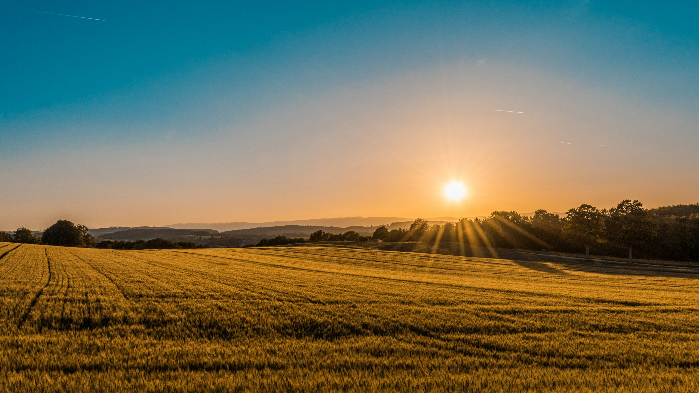

“Você está tomando as decisões certas para maximizar o potencial da sua lavoura?”
Introdução
Essa pergunta ecoa na mente de muitos agricultores, especialmente diante das limitações das recomendações tradicionais, que nem sempre refletem as condições reais do campo. A experimentação on-farm surge como uma solução poderosa, trazendo a ciência para o centro da operação agrícola.
Ao integrar tecnologia de ponta e práticas baseadas em dados, ela permite que produtores validem e ajustem estratégias diretamente no seu talhão, garantindo decisões mais assertivas e adaptadas à realidade local.
Eiwa, planejar, monitorar e criar recomendações baseadas nesses experimentos nunca foi tão fácil e eficiente.
Tudo começa com um planejamento bem estruturado. O primeiro passo é definir objetivos claros: descobrir a dose ideal de fertilizante, avaliar diferentes densidades de plantio ou comparar variedades de sementes, por exemplo.
Esses objetivos ajudam a direcionar o experimento e garantem que as respostas obtidas sejam úteis para a tomada de decisão.
A escolha da área experimental também é crítica. Selecionar locais que representem a variabilidade do talhão – considerando fatores como topografia, textura do solo, drenagem e histórico de produtividade – é essencial para capturar informações relevantes.
Ferramentas da Eiwa, como mapas de produtividade e análises de solo integradas, ajudam a identificar essas áreas de maneira precisa e rápida.